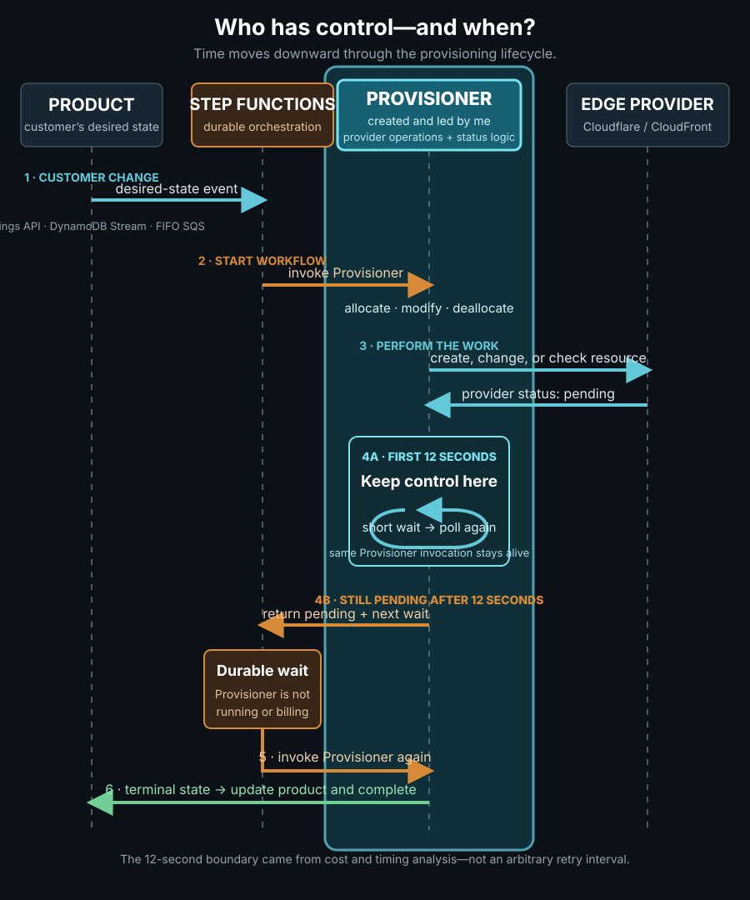

GoDaddy · WAF/CDN · Event-driven architecture · Go · AWS
Orchestrating global WAF/CDN deployment from one product setting
Designed and built key components of GoDaddy’s WAF/CDN platform, integrating AWS and Cloudflare to turn a product setting into a working edge deployment. The event-driven, serverless architecture used Go, AWS Lambda, Step Functions, SQS, and DynamoDB Streams to coordinate provisioning, rate limiting, retries, and state.
One setting had to create a real edge service
Customers could enable WAF/CDN service for a domain without manually configuring edge infrastructure.
The web application firewall screened malicious traffic, while the content delivery network served content from distributed edge locations. Behind the product setting, the platform still had to configure Cloudflare or AWS CloudFront, connect the customer’s origin, coordinate certificates and domain validation, and report an accurate status.
I created the Provisioner and served as its subject-matter expert. It was the backend service that created, changed, checked, and removed those provider resources. I also co-created the Step Functions state machine that coordinated the longer-running workflow around it.
A simplified view of the workflow

Simplified diagram. Time moves downward. The highlighted area is the Provisioner; the arrows show when control remained inside it and when it returned to the state machine.
A settings change produced a DynamoDB stream event, SQS buffered the request, and the state machine invoked the Provisioner. The Provisioner then called the provider and translated Cloudflare or CloudFront responses into one shared product state.
A deliberate 12-second boundary My analysis showed that short polling was cheaper inside the running Provisioner. After 12 seconds, the lower-cost option was to return control to Step Functions, wait there, and invoke the Provisioner again.
Controlling load without wasting capacity
I configured a representative site using the default product settings, then used a custom Python/Locust suite and supporting automation to increase allocation and cache-invalidation traffic and verify stability. Custom load shapes, distributed workers, response-time logging, and CloudWatch analysis helped identify the point where latency and HTTP 429 responses began to rise.
Admission control New allocations stayed queued when the active-workflow budget was full, protecting internal and provider APIs.
Cost-aware polling Fast checks stayed inside the Provisioner; longer waits moved to Step Functions with bounded backoff.
Per-site correctness FIFO grouping and serialization prevented overlapping changes from racing on the same site.
The production safeguards also included explicit terminal states, failed-allocation persistence, blocked-domain handling, queue-capacity monitoring, and alerts when provisioning was at risk.
What this project demonstrates
Event-driven serverless architecture Created the Go-based Provisioner and integrated AWS Lambda, SQS, DynamoDB Streams, and Step Functions.
Distributed workflow orchestration Co-created the state machine that coordinated asynchronous allocation, validation, synchronization, modification, and removal.
Performance and cost engineering Used Locust load testing and CloudWatch analysis to design admission control, rate limiting, retries, backoff, and a cost-aware polling boundary.
Production resilience and observability Added terminal-state handling, failure persistence, domain safeguards, queue-capacity monitoring, and operational alerts.
Multi-provider edge integration Normalized Cloudflare and AWS CloudFront lifecycles—including origins, certificates, domain validation, and provider state—behind one product model.
Concurrency and consistency controls Used FIFO grouping, per-site serialization, bounded retries, and explicit state transitions to prevent overlapping changes from racing.
Why it was interesting A single customer setting had to coordinate asynchronous APIs, certificates, queues, workflows, rate limits, and failures—while hiding that complexity from the customer.